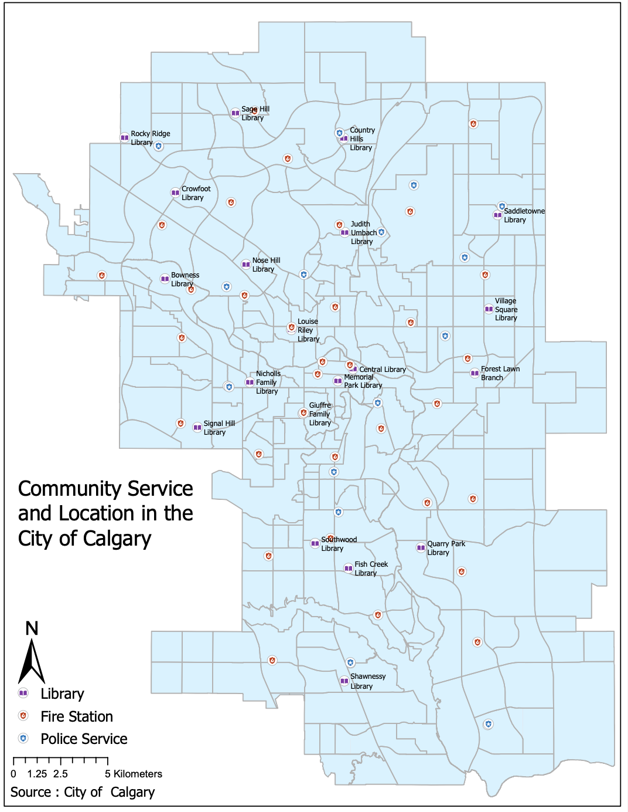
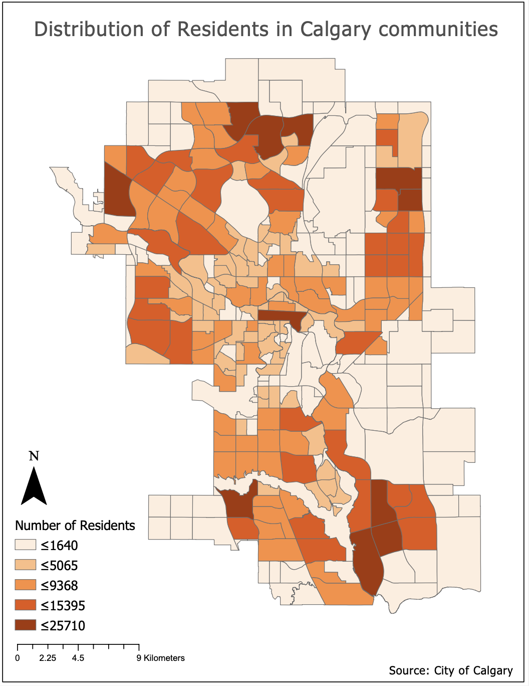
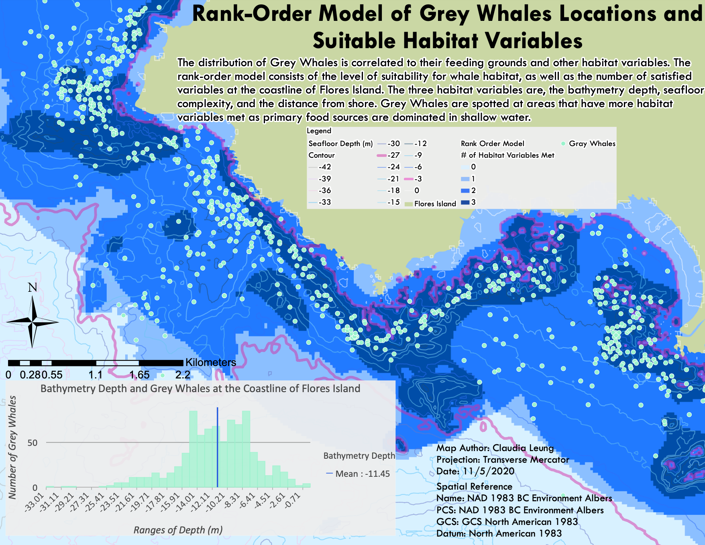
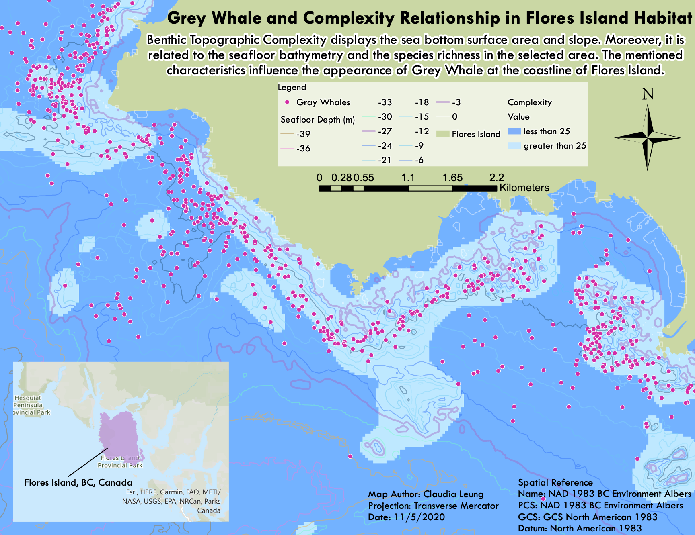
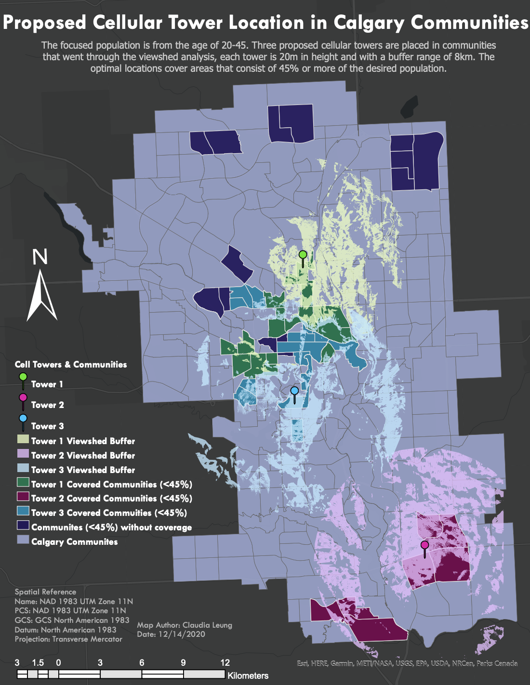
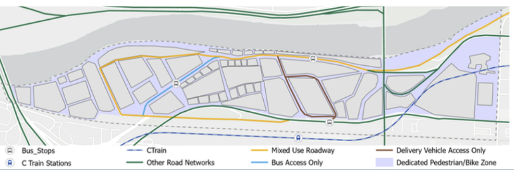
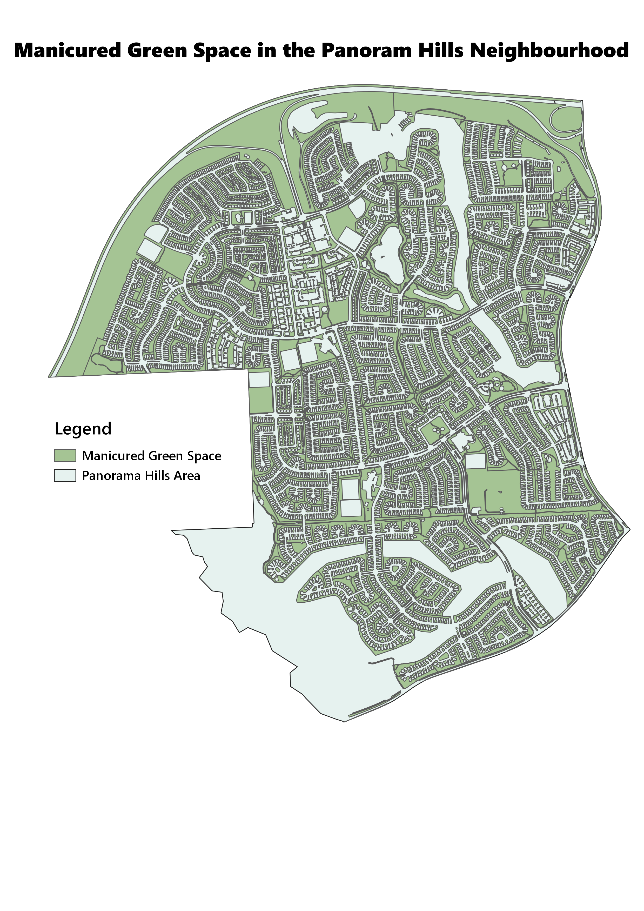

Claudia Leung
Environmental Science • Physical Geography • Urban Environment
Claudia graduated from the University of Calgary with a Bachelor of Science, and her interest in data and visualization has only grown since. Early in her environmental career, she's already had the chance to apply technical skills and knowledge, and she continues to build on that experience in her consulting work. She's always excited to pick up new skills, whether for her job or just for herself. Outside of work, she unwinds with drawing and painting. When the weather gets warmer, she likes to trade her pencils and paintbrushes for a tennis racket or hiking boots.
GIS Projects
Spatial Studies in
 &
&








Early GIS Projects and Assignments
Claudia's GIS skills began taking shape in her second year of university, when she started creating maps of Calgary and Alberta using simple datasets.



Adding Urban Studies into the Mix
During her bachelor's studies, Claudia developed an interest in the urban environment and added Urban Studies as her minor. Projects related to urban planning and zoning gave her even more opportunities to sharpen her GIS skills.


Studying the Swedish Landscape
During her exchange semester in Lund, a small town in southwest Sweden, Claudia had the opportunity to visit the Verkka Valley on field visits to document current land uses, including agricultural lands and forested areas. As part of a group landscape study, she investigated how those land uses had shifted over 80 years. The team used ArcGIS Pro to categorize and map out the different land classes.


Field Course Ⅰ in Calgary
In a Calgary-based field course, Environmental Science students started bringing GIS together with real-world environmental issues. For the first assignment, they used QGIS to map out the Downtown Calgary floodplain alongside its surrounding natural and urban infrastructure. Natural infrastructure, including vegetation, city parks, and urban trees along the floodplain, helps increase flood resilience and water retention when flooding occurs.



Field Course Ⅱ in Calgary
Continuing with natural infrastructure in the city, Claudia decided to study Panorama Hills, a suburban community in Calgary. Natural infrastructure is essential for mitigating extreme weather events and strengthening climate adaptation. Green spaces, city parks, and urban trees were mapped with QGIS to visualize their distribution.


How Does Land Use Affect Aquatic Biodiversity?
That was the driving question behind Claudia's eight-month capstone group research project in her final year. Alongside her group, she explored how human land use, including roads, railways, and powerlines, affects riparian health and aquatic biodiversity across Alberta.

Small Personal Project
After completing her exchange semester in Sweden, Claudia went backpacking around Europe for two months before returning to Canada. To thank the friends and family she visited along the way, she designed a postcard featuring her train route, mapped out with ArcGIS Pro.